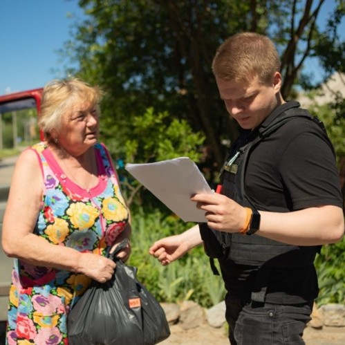
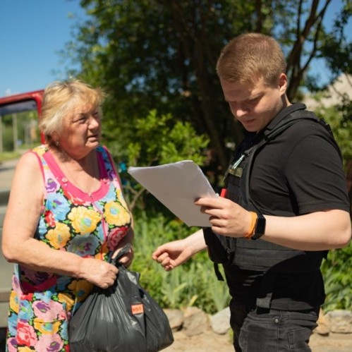
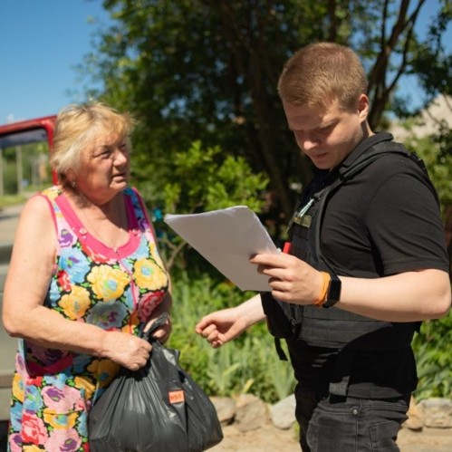
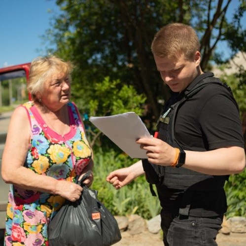
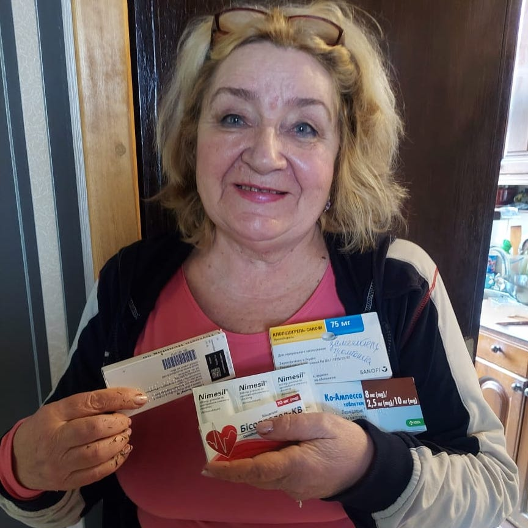
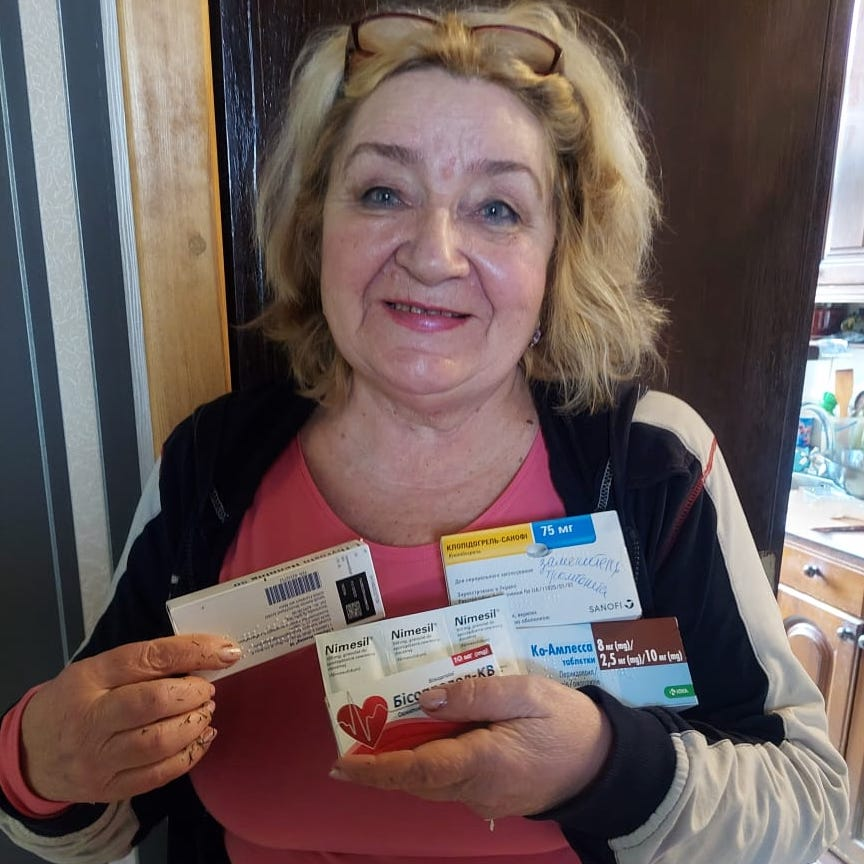
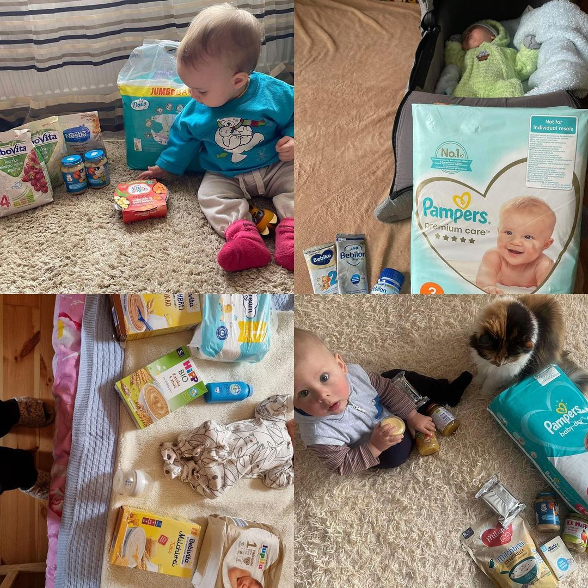
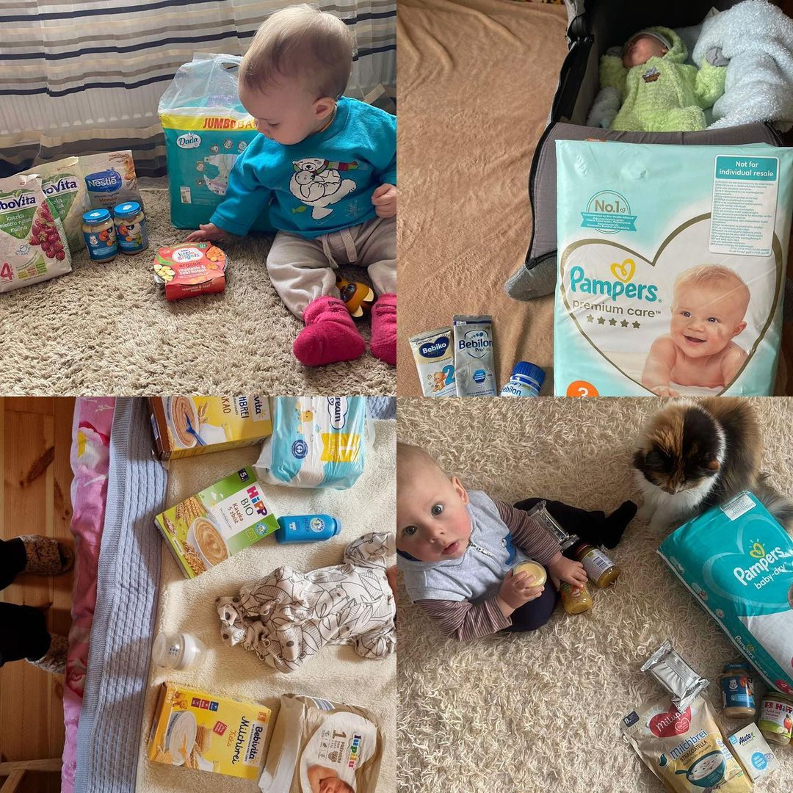
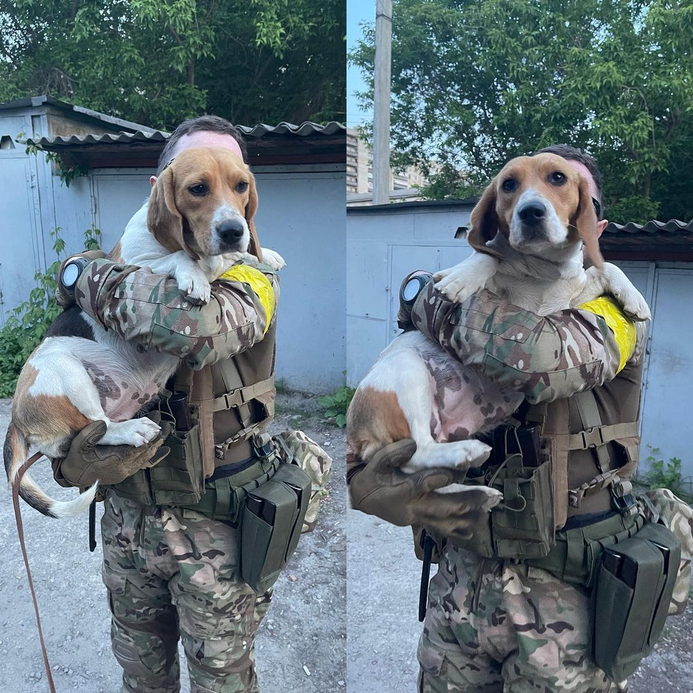
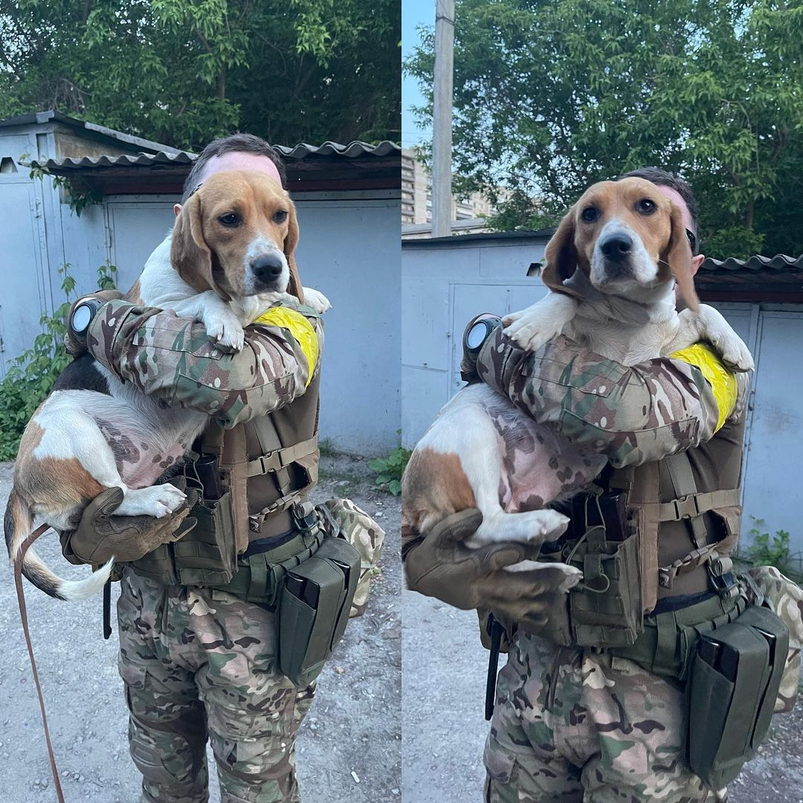

Rescue now


 





De organisatie werd opgericht door vrouwen, zussen, dochters en andere familieleden van de verdedigers van Azovstal. De organisatie heeft twee hoofdtaken: het helpen van de gevangengenomen verdedigers en het helpen van de families van de op Azovstal gevangengenomen of gesneuvelde strijders. Daarnaast houdt de organisatie zich bezig met media-ondersteuning en berichtgeving over de situatie met Oekraïense helden in gevangenschap.


 

Een sportrehabilitoloog uit Kharkiv, die ook vrijwilliger is en het leger en de omwonenden gratis helpt in deze moeilijke tijd. Dankzij hem ontvangen veel gezinnen in Kharkiv en in naburige dorpen voedsel, huishoudelijke, geneesmiddelen en hygiënische artikelen. Hij organiseert zelf hulp zonder de steun van de staat of grote officiële vrijwilligersorganisaties.
 

 

Go peremoga is een publieke organisatie in Kharkiv die hulp verleent aan de burgerbevolking en het leger. Ze kopen apparatuur, voedsel, medicijnen en hygiëneproducten voor ouderen, gehandicapten en gezinnen met kinderen. Ze helpen met het inrichten van een lokaal ziekenhuis. Dieren te redden uit de bezette gebieden. En ook helpen met de uitrusting van de militaire eenheid "Kraken" (multicopters, auto ' s, armor en meer).
belaykh@icloud.com |
||
Monobank kaart: 5375414114553208 Anastasiya P. |


Het restaurant is gevestigd in Kharkiv en bereidt gratis lunches voor vrijwilligers en het leger, en ze hebben ook een project "Suspended Pizza". Je betaalt voor een pizza (of pizza ' s) (1 pizza - 6 €), kiest aan wie je het wilt geven (militairen, artsen, vluchtelingen of lokale slachtoffers van vijandelijkheden) en schrijft erover in de opmerkingen bij de overdracht. Schrijf op elke pizzadoos de naam van de gever of de wens die je wilt overbrengen.
Een vrijwilligersstichting in Kharkiv, die zich bezighoudt met de evacuatie van de mensen uit de gevaarlijkste gevechtszones, en ook humanitaire hulp biedt aan mensen met een handicap. Elke maand helpen ze honderden gehandicapten en ouderen, van wie er tientallen permanent onder hun beschermheerschap staan. Het team van de stichting bestaat uit Vriendelijke, responsieve en creatieve jongeren, van wie velen hun hele leven wijden aan het werk van de stichting.
IBAN: UA913366770000026005052563740
Bedrijfsnaam: CO “CHARITABLE FOUNDATION “RESCUE NOW”
Naam bank: JSC CB “PRIVATBANK”, 1D HRUSHEVSKOHO STR., KYIV, 01001, UKRAINE
Swift-code: PBANUA2X
Adres van de bank: Vysochanka, Zarichna street 55, Ivano-Frankivska oblast, Ukraine, 71177